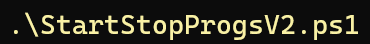
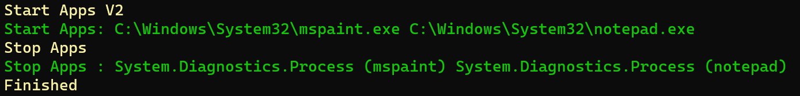
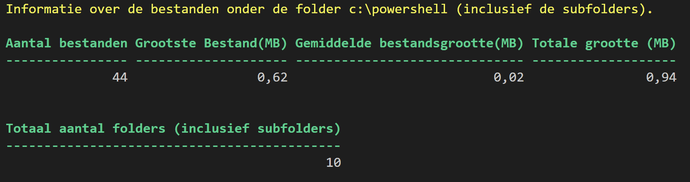
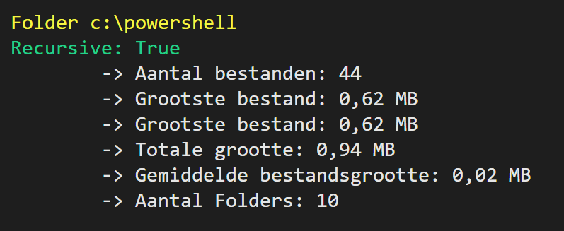

1. Uitvoer bewaren en opnieuw gebruiken
Voer de opdrachten vanuit de root van je repository uit. Maak eerst de map output/.
1.1 Processen als tekst
- Schrijf de uitvoer van
Get-Processnaaroutput/processInfo.txt. - Toon de inhoud van dat bestand opnieuw in de terminal.
- Toon dezelfde inhoud vervolgens per pagina.
Noteer de drie commando's in answers.html.
Maak de map output aan
New-Item -Path .\output -ItemType DirectoryStap 1: Uitvoer van
Get-Process naar een bestandGet-Process | Out-File .\output\processInfo.txtStap 2: Inhoud van het bestand tonen
Get-Content .\output\processInfo.txtStap 3: Inhoud van het bestand per pagina tonen
Get-Content .\output\processInfo.txt | moreDe map maken zonder fout als ze al bestaat:
New-Item -Path .\output -ItemType Directory -ForceTonen én bewaren in één stap met
Tee-Object (hands-on 04):Get-Process | Tee-Object -FilePath .\output\processInfo.txtPer pagina:
Get-Content -Path .\output\processInfo.txt | more → spatie = volgende pagina, q = stoppen.
1.2 Windows-bestanden als HTML
- Vraag met
Get-ChildItemde inhoud vanC:\Windowsop. - Zet de objecten om naar HTML en bewaar ze als
output/WinFiles.html. - Open het HTML-bestand met het standaardprogramma voor
.html-bestanden.
Stap 1: Inhoud van C:\Windows opvragen
Get-ChildItem -Path C:\WindowsStap 2: Omzetten naar HTML en bewaren
Get-ChildItem -Path C:\Windows | ConvertTo-Html | Out-File .\output\WinFiles.htmlStap 3: Openen met het standaardprogramma
Invoke-Item .\output\WinFiles.htmlAlleen de nuttige kolommen in de HTML-tabel zetten:
Get-ChildItem -Path C:\Windows | ConvertTo-Html -Property Name, Length, LastWriteTime | Out-File -FilePath .\output\WinFiles.htmlInvoke-Item -Path .\output\WinFiles.htmlZonder
-Property neemt ConvertTo-Html alle properties op en wordt de tabel erg breed.Optioneel, een titel voor het browsertabblad:
Get-Help ConvertTo-Html -Parameter Title
1.3 Windows-bestanden als CSV en CLIXML
- Exporteer de inhoud van
C:\Windowsnaaroutput/WinFiles.csv. - Exporteer dezelfde objecten naar
output/WinFiles.xmlin het PowerShell CLIXML-formaat. - Importeer
WinFiles.xmlopnieuw en toon alleenName,Extension,LengthenLastAccessTime.
Leg in answers.md kort uit waarom CLIXML geschikter is dan gewone tekst wanneer je PowerShell-objecten opnieuw wilt gebruiken.
Get-ChildItem C:\Windows | Export-Csv .\output\WinFiles.csvGet-ChildItem C:\Windows | Export-Clixml .\output\WinFiles.xmlImport-Clixml .\output\WinFiles.xml | Select-Object Name, Extension, Length, LastAccessTimeWaarom is
CLIXML geschikter dan gewone tekst?Export-Clixml bewaart de PowerShell-objecten zelf (serialisatie): hun eigenschappen, waarden en datatypes. Met Import-Clixml krijg je ze terug als objecten, zodat je opnieuw kunt filteren, sorteren en eigenschappen selecteren. Gewone tekst (Out-File) bewaart alleen wat op het scherm staat; met Get-Content lees je dan enkel tekstregels in. Ook bij CSV (Import-Csv) komen alle waarden terug als tekst (strings).Bewijs dat CLIXML de datatypes bewaart en CSV niet:
Import-Csv -Path .\output\WinFiles.csv | Get-Member -Name Length → string Length=...: de grootte is tekst geworden.Import-Clixml -Path .\output\WinFiles.xml | Get-Member -Name Length → System.Int64: de grootte is nog altijd een getal.Daardoor sorteert
Import-Clixml ... | Sort-Object Length correct op grootte. Na Import-Csv sorteert PowerShell de tekst, dus bv. "1000" vóór "9".Het type na
Import-Clixml: Deserialized.System.IO.FileInfo. Dat is een kopie met dezelfde properties, maar zonder de methods van het originele object.
1.4 Paden testen
- Maak de map
C:\pxl_is_the_best. - Controleer met een cmdlet of de map bestaat.
- Controleer ook of
output/WinFiles.xmlbestaat. - Noteer beide booleaanse resultaten in
answers.html.
New-Item -Path 'C:\pxl_is_the_best' -ItemType Directory -ForceTest-Path 'C:\pxl_is_the_best' → TrueTest-Path '.\output\WinFiles.xml' → TrueStrenger controleren of het echt een map en een bestand is:
Test-Path -Path 'C:\pxl_is_the_best' -PathType Container → TrueTest-Path -Path '.\output\WinFiles.xml' -PathType Leaf → True-Force bij New-Item zorgt dat er geen fout komt als de map al bestaat.
2. Bestanden en mappen kopiëren
LET OP: Voer dit deel alleen uit op een oefensysteem. De opdrachten maken, verplaatsen en verwijderen mappen onder
C:\pxl_source,C:\pxl_destination,C:\pxl_finalenC:\pxl_is_the_best. Controleer vóór iedere verwijdering het letterlijke doelpad. Verwijder deze vier oefenmappen na de oefening.
2.1 Bronmap en testbestanden
- Maak
C:\pxl_source. - Maak daarin 50 lege bestanden met de namen
File_1.txttot en metFile_50.txt. - Verifieer dat exact 50 bestanden aanwezig zijn.
TIP: Genereer de nummers met de bereikoperator
..en gebruikForEach-Objectom voor ieder nummer een bestand te maken.
New-Item -Path C:\pxl_source -ItemType Directory1..50 | ForEach-Object { New-Item -Path C:\pxl_source -Name "File_$_.txt" -ItemType File }(Get-ChildItem C:\pxl_source | Measure-Object).Count → 501..50 maakt de getallen 1 tot en met 50. ForEach-Object maakt voor elk getal ($_) een bestand.Controle met
Measure-Object en alleen bestanden:Get-ChildItem -Path C:\pxl_source -File | Measure-Object | Select-Object -ExpandProperty Count → 50Ook mogelijk: eerst de 50 namen maken en ze dan in één
New-Item aanmaken (-Path aanvaardt meerdere paden):New-Item -Path (1..50 | ForEach-Object { "C:\pxl_source\File_$_.txt" }) -ItemType File
2.2 Kopieergedrag onderzoeken
Voer elke stap afzonderlijk uit en noteer in answers.md wat PowerShell doet.
- Kopieer de bestanden uit
C:\pxl_sourcenaarC:\pxl_destination, zonder-Forceof-Recurse. Verifieer het resultaat. - Verwijder
C:\pxl_destination. Kopieer daarna alleenFile_1.txtnaar het niet-bestaande padC:\pxl_destination. Beschrijf of PowerShell een map of bestand maakt. - Verwijder het doel opnieuw zonder bevestigingsvraag. Kopieer daarna alle bronbestanden naar
C:\pxl_destinationzonder de doelmap vooraf te maken. - Herhaal het laatste kopieercommando zonder de doelmap eerst te verwijderen. Leg het verschil uit.
- Maak een lege
C:\pxl_destinationen kopieer alle bestanden rechtstreeks naar die map, dus zonder de submappxl_source. - Maak het doel opnieuw leeg en kopieer nu de bronmap inclusief inhoud naar
C:\pxl_destination. - Verplaats
C:\pxl_destination, inclusief inhoud, naarC:\pxl_final.
Controleer na elke stap met Get-ChildItem en Test-Path.
Copy-Item C:\pxl_source C:\pxl_destination
Controle:Test-Path C:\pxl_destination→True, maarGet-ChildItem C:\pxl_destinationtoont niets.
Zonder-Recursekopieert PowerShell alleen de map zelf: je krijgt een lege map, de 50 bestanden worden niet mee gekopieerd.Remove-Item C:\pxl_destination
Copy-Item C:\pxl_source\File_1.txt C:\pxl_destination
Controle:Test-Path C:\pxl_destination -PathType Leaf→True
Het doel bestaat niet, dus PowerShell maakt een bestand met de naampxl_destination(een kopie vanFile_1.txt), geen map.Remove-Item C:\pxl_destination -Force
Copy-Item C:\pxl_source C:\pxl_destination -Recurse
Controle:Get-ChildItem C:\pxl_destination→File_1.txttotFile_50.txt
Het doel bestaat niet, dus PowerShell maakt de mapC:\pxl_destinationen zet de 50 bestanden er rechtstreeks in.Copy-Item C:\pxl_source C:\pxl_destination -Recurse(opnieuw)
Controle:Get-ChildItem C:\pxl_destination→ de 50 bestanden en een submappxl_source
Verschil: het doel bestaat nu al. Daarom kopieert PowerShell de bronmap in de doelmap, als submapC:\pxl_destination\pxl_source. PowerShell vraagt niets.Remove-Item C:\pxl_destination -Recurse -Force
New-Item -Path C:\pxl_destination -ItemType Directory
Copy-Item C:\pxl_source\* C:\pxl_destination
De*selecteert de inhoud van de bronmap. De bestanden komen rechtstreeks in de doelmap, zonder submappxl_source.Remove-Item C:\pxl_destination\* -Recurse -Force(de map leegmaken, niet verwijderen)
Copy-Item C:\pxl_source C:\pxl_destination -Recurse
Controle:Get-ChildItem C:\pxl_destination -Recurse→C:\pxl_destination\pxl_source\File_1.txt...
Omdat de (lege) doelmap al bestaat, komt de bronmap met inhoud als submappxl_sourcein het doel.Move-Item C:\pxl_destination C:\pxl_final
Controle:Test-Path C:\pxl_destination→False,Test-Path C:\pxl_final→True
C:\pxl_finalbestond nog niet, dus de map wordt verplaatst en krijgt de nieuwe naampxl_final, met de inhoud erin.
Samenvatting van de regels (getest):
Copy-Item map doelzonder-Recurse→ alleen een lege map.- Eén bestand naar een pad dat niet bestaat → PowerShell maakt een bestand met die naam.
-Recurseen het doel bestaat niet → het doel wordt een kopie van de bronmap.-Recurseen het doel bestaat al → de bronmap komt als submap in het doel.bron\*→ alleen de inhoud van de bronmap wordt gekopieerd.
-WhatIf (Course, hoofdstuk 06), bv.:Copy-Item -Path C:\pxl_source -Destination C:\pxl_destination -Recurse -WhatIfDe volledige structuur na elke stap tonen:
Get-ChildItem -Path C:\pxl_destination -Recurse | Select-Object FullName
2.3 Opruimen
Controleer dat deze variabele alleen de drie bedoelde oefenpaden bevat en verwijder ze daarna:
$labPaths = @(
'C:\pxl_source'
'C:\pxl_destination'
'C:\pxl_final'
'C:\pxl_is_the_best'
)Noteer hoe je vóór en na het verwijderen hebt gecontroleerd welke paden bestonden.
Vóór het verwijderen:
$labPaths → toont de vier paden, zodat je ziet dat het enkel oefenmappen zijnTest-Path $labPaths → True, False, True, True (C:\pxl_destination werd in stap 7 verplaatst)Verwijderen (eerst een voorbeeld met
-WhatIf):Remove-Item $labPaths -Recurse -Force -WhatIfRemove-Item $labPaths -Recurse -Force -ErrorAction SilentlyContinue-ErrorAction SilentlyContinue voorkomt een foutmelding voor C:\pxl_destination, dat niet meer bestaat.Na het verwijderen:
Test-Path $labPaths → vier keer FalseVoor elk pad tonen of het bestaat, met de naam erbij:
$labPaths | ForEach-Object { "$_ : $(Test-Path -Path $_)" }Alleen de paden verwijderen die echt bestaan, zodat er geen fout komt en
-ErrorAction SilentlyContinue niet nodig is:$labPaths | Where-Object { Test-Path -Path $_ } | Remove-Item -Recurse -Force -WhatIf$labPaths | Where-Object { Test-Path -Path $_ } | Remove-Item -Recurse -ForceControle:
Test-Path -Path $labPaths → vier keer False
3. Script: applicaties starten en stoppen
LET OP: Deze scripts starten toepassingen en sluiten alle processen van Kladblok en Rekenmachine af. Sla werk vooraf op, voer de scripts alleen op een oefensysteem uit en controleer met
Get-Processof de processen na afloop gestopt zijn.
3.1 Eén pipeline
- Start Kladblok en Rekenmachine met één pipeline die eindigt in één aanroep van
Invoke-Item. - Sluit daarna met één pipeline alle processen van beide toepassingen.
Starten:
Get-ChildItem C:\Windows\System32\notepad.exe, C:\Windows\System32\calc.exe | Invoke-ItemGet-ChildItem zoekt de twee programmabestanden; Invoke-Item opent ze.Stoppen:
Get-Process notepad, *calc* | Stop-ProcessIn Windows 11 heet het proces van Rekenmachine
CalculatorApp en niet calc. Met *calc* vind je het toch.Starten met
-Include (Course, hoofdstuk 06) en $env:WINDIR:Get-ChildItem -Path "$env:WINDIR\System32\*" -Include notepad.exe, calc.exe | Invoke-Item-Include werkt hier dankzij de \* achter het pad.Stoppen zonder foutmelding als een van de twee al gesloten is:
Get-Process -Name notepad, CalculatorApp -ErrorAction SilentlyContinue | Stop-Process
3.2 StartStopProgsV1.ps1
Maak scripts/StartStopProgsV1.ps1 en bewaar de gevonden objecten in:
$start_Apps = $null # vervang door de gevonden bestanden
$stop_Apps = $null # vervang door de gevonden processenGebruik de variabelen om beide toepassingen te starten en vervolgens te stoppen. Toon duidelijke statusmeldingen.
<#
.SYNOPSIS
Start en stopt Kladblok en Rekenmachine.
.DESCRIPTION
Zoekt notepad.exe en calc.exe, start ze en sluit ze daarna weer af.
.NOTES
Author: Angelo Switon (PXL Student)
.EXAMPLE
./scripts/StartStopProgsV1.ps1
#>
# De gevonden bestanden
$start_Apps = Get-ChildItem C:\Windows\System32\notepad.exe, C:\Windows\System32\calc.exe
Write-Host "Kladblok en Rekenmachine worden gestart..." -ForegroundColor Green
$start_Apps | Invoke-Item
Start-Sleep -Seconds 3
# De gevonden processen (pas zoeken NA het starten)
$stop_Apps = Get-Process notepad, *calc*
Write-Host "Kladblok en Rekenmachine worden gestopt..." -ForegroundColor Yellow
$stop_Apps | Stop-Process
Write-Host "Klaar." -ForegroundColor Cyan$stop_Apps wordt pas ingevuld nadat de programma's gestart zijn. Anders zijn er nog geen processen om te vinden.<#
.SYNOPSIS
Start en stopt Kladblok en Rekenmachine.
.DESCRIPTION
Zoekt notepad.exe en calc.exe, start ze met Invoke-Item en stopt
daarna alle processen van beide toepassingen.
.NOTES
Author: Angelo Switon (PXL Student)
.EXAMPLE
.\scripts\StartStopProgsV1.ps1
#>
$start_Apps = Get-ChildItem -Path "$env:WINDIR\System32\*" -Include notepad.exe, calc.exe
Write-Host "Starten: $($start_Apps.Name -join ', ')" -ForegroundColor Green
$start_Apps | Invoke-Item
Start-Sleep -Seconds 3
$stop_Apps = Get-Process -Name notepad, CalculatorApp -ErrorAction SilentlyContinue
Write-Host "Stoppen: $($stop_Apps.Count) proces(sen)" -ForegroundColor Yellow
$stop_Apps | Stop-Process
Write-Host 'Klaar.' -ForegroundColor CyanStart-Sleep wacht 3 seconden, zodat de programma's echt gestart zijn voordat Get-Process ze zoekt. (Start-Sleep komt in de Course pas bij de les over lussen.)In Windows 11 heet het proces van Rekenmachine
CalculatorApp.
3.3 StartStopProgsV2.ps1
Maak scripts/StartStopProgsV2.ps1. Gebruik ook:
$app_01 = 'notepad'
$app_02 = 'calc'Gebruik deze namen in je filters; schrijf ze niet opnieuw letterlijk in de filterexpressies.

De oudere bronafbeelding gebruikt Paint; jouw huidige versie gebruikt Rekenmachine.

<#
.SYNOPSIS
Start en stopt twee programma's via variabelen.
.DESCRIPTION
Zoekt de programma's uit $app_01 en $app_02, start ze en sluit ze daarna weer af.
.NOTES
Author: Angelo Switon (PXL Student)
.EXAMPLE
./scripts/StartStopProgsV2.ps1
#>
$app_01 = 'notepad'
$app_02 = 'calc'
# Bestanden zoeken met een filter op de variabelen
$start_Apps = Get-ChildItem C:\Windows\System32 -File |
Where-Object { $_.Name -eq "$app_01.exe" -or $_.Name -eq "$app_02.exe" }
Write-Host "Starten van $app_01 en $app_02..." -ForegroundColor Green
$start_Apps | Invoke-Item
Start-Sleep -Seconds 3
# Processen zoeken met een filter op de variabelen
$stop_Apps = Get-Process |
Where-Object { $_.Name -like "*$app_01*" -or $_.Name -like "*$app_02*" }
Write-Host "Stoppen van $app_01 en $app_02..." -ForegroundColor Yellow
$stop_Apps | Stop-Process
Write-Host "Klaar." -ForegroundColor Cyan$app_01 en $app_02. De filters gebruiken die variabelen. -like "*$app_02*" vindt ook het proces CalculatorApp.$app_01 = 'notepad'
$app_02 = 'calc'
# Bestanden: de namen worden opgebouwd uit de variabelen
$start_Apps = Get-ChildItem -Path "$env:WINDIR\System32" -File |
Where-Object Name -in "$app_01.exe", "$app_02.exe"
Write-Host "Starten: $($start_Apps.Name -join ', ')" -ForegroundColor Green
$start_Apps | Invoke-Item
Start-Sleep -Seconds 3
# Processen: wildcard, zodat ook CalculatorApp gevonden wordt
$stop_Apps = Get-Process |
Where-Object { $_.Name -like "*$app_01*" -or $_.Name -like "*$app_02*" }
Write-Host "Stoppen: $($stop_Apps.Count) proces(sen)" -ForegroundColor Yellow
$stop_Apps | Stop-Process-in (Course, hoofdstuk 03) controleert of de bestandsnaam in de lijst "notepad.exe", "calc.exe" staat. Die lijst komt volledig uit $app_01 en $app_02.
4. Command Prompt en PowerShell vergelijken
4.1 dir /s en ipconfig /all
Voer beide opdrachten eerst uit in cmd.exe en daarna in PowerShell. Beantwoord:
- Werkt elk commando in beide omgevingen?
- Verwijst
dirin beide omgevingen naar hetzelfde soort commando? - Hoe achterhaal je in PowerShell wat
direnipconfigprecies zijn? - Welke betekenis heeft
/sin beide omgevingen en waarom kan dat tot verschillend gedrag leiden?
ipconfig /allwerkt in beide omgevingen.
dir /swerkt alleen incmd.exe. In PowerShell krijg je een fout:Cannot find path 'C:\s' because it does not exist.- Nee. In
cmd.exeisdireen ingebouwd commando van cmd. In PowerShell isdireen alias voor de cmdletGet-ChildItem.
ipconfigis in beide omgevingen hetzelfde programma:ipconfig.exe. - Met
Get-Command(ofGet-Alias):
Get-Command dir→ CommandTypeAlias:dir -> Get-ChildItem
Get-Command ipconfig→ CommandTypeApplication:C:\Windows\system32\ipconfig.exe
Get-Alias dir→dir -> Get-ChildItem - In
cmd.exeis/seen optie: "toon ook alle submappen".
In PowerShell is/sgeen optie.Get-ChildItemleest/sals een pad (C:\s), en dat pad bestaat niet. In PowerShell gebruik jedir -Recurse(Get-ChildItem -Recurse).
ipconfig /allwerkt wel overal, omdat/allgewoon aan het programmaipconfig.exewordt doorgegeven.
Beide opdrachten in één keer onderzoeken:
Get-Command dir, ipconfig → dir is een Alias (voor Get-ChildItem), ipconfig is een Application (ipconfig.exe).De PowerShell-versie van
dir /s:Get-ChildItem -Recurse of kort dir -RecurseGet-Help Get-ChildItem -Parameter Recurse → uitleg over de parameterDe cmd-versie van
dir kan je vanuit PowerShell starten via cmd.exe: cmd /c dir /s C:\pxl_source. /c zegt: voer dit commando uit in cmd en stop daarna.
5. Geschiedenis en transcript
5.1 Get-History
Leg uit wat Get-History toont en geef een praktisch voorbeeld uit je huidige sessie.
5.2 Start-Transcript
- Start een transcript naar
output/transcript001.txtzonder een bestaand bestand te overschrijven. - Voer enkele onschuldige opdrachten uit.
- Stop het transcript expliciet.
- Controleer de inhoud en leg uit wat wordt geregistreerd.
5.1
Get-HistoryGet-History toont de lijst van commando's die je in de huidige PowerShell-sessie hebt uitgevoerd, elk met een Id. Sluit je PowerShell, dan begint de lijst opnieuw.Voorbeeld:
Get-History toont bv. 1 Get-Process | Out-File .\output\processInfo.txt, 2 Get-Content .\output\processInfo.txt, ... Zo zie je snel welke commando's je al gebruikt hebt en kun je ze kopiëren naar je antwoorden.5.2
Start-TranscriptStart-Transcript -Path .\output\transcript001.txt -NoClobberGet-DateGet-LocationStop-TranscriptGet-Content .\output\transcript001.txt-NoClobber zorgt ervoor dat een bestaand bestand niet overschreven wordt.Het transcript bewaart alles van de sessie in een tekstbestand: bovenaan een kop met o.a. gebruiker, computer, starttijd en PowerShell-versie, daarna elk commando dat je typt en de uitvoer ervan, tot
Stop-Transcript.
5.1 Alleen de laatste vijf commando's, met hun nummer:
Get-History | Select-Object -Last 5 -Property Id, CommandLine5.2 Het verschil tussen
-NoClobber en -Append:Start-Transcript -Path .\output\transcript001.txt -NoClobber → bestaat het bestand al, dan geeft dit een fout en wordt er niets overschreven.Start-Transcript -Path .\output\transcript001.txt -Append → schrijft verder onderaan het bestaande transcript.Controle dat het transcript gestopt is: een tweede
Stop-Transcript geeft een fout, want er loopt geen transcript meer.
6. Script: mapinformatie
6.1 Eerste versie
Maak scripts/ShowFolderInfo.ps1. Gebruik $myFolder en toon inclusief submappen:
- het aantal bestanden;
- de grootste, gemiddelde en totale bestandsgrootte in MB;
- het aantal submappen.
Rond groottes af op twee decimalen. Test eerst met $env:USERPROFILE en daarna met C:\Windows\System32. Gebruik -ErrorAction zodat ontoegankelijke onderdelen geen foutmeldingen tonen en leg uit waarom dit hier passend is.

<#
.SYNOPSIS
Toont informatie over de bestanden en mappen in een folder.
.DESCRIPTION
Toont het aantal bestanden, de grootste, gemiddelde en totale grootte in MB
en het aantal submappen van $myFolder (inclusief submappen).
.NOTES
Author: Angelo Switon (PXL Student)
.EXAMPLE
./scripts/ShowFolderInfo.ps1
#>
$myFolder = $env:USERPROFILE # test daarna met 'C:\Windows\System32'
Write-Host "Informatie over de bestanden onder de folder $myFolder (inclusief de subfolders)." -ForegroundColor Yellow
Get-ChildItem -Path $myFolder -Recurse -File -ErrorAction SilentlyContinue |
Measure-Object -Property Length -Maximum -Average -Sum |
Select-Object @{Name='Aantal bestanden'; Expression={$_.Count}},
@{Name='Grootste Bestand(MB)'; Expression={[math]::Round($_.Maximum / 1MB, 2)}},
@{Name='Gemiddelde bestandsgrootte(MB)'; Expression={[math]::Round($_.Average / 1MB, 2)}},
@{Name='Totale grootte (MB)'; Expression={[math]::Round($_.Sum / 1MB, 2)}} |
Format-Table
Get-ChildItem -Path $myFolder -Recurse -Directory -ErrorAction SilentlyContinue |
Measure-Object |
Select-Object @{Name='Totaal aantal folders (inclusief subfolders)'; Expression={$_.Count}} |
Format-TableMeasure-Object -Property Length -Maximum -Average -Sum berekent alles in één keer (in bytes). Delen door 1MB en [math]::Round(..., 2) maakt er MB met twee decimalen van.Waarom
-ErrorAction SilentlyContinue?Sommige mappen (vooral in
C:\Windows\System32) mag je als gewone gebruiker niet openen. Zonder deze optie krijg je voor elke zo'n map een rode foutmelding. Met SilentlyContinue slaat PowerShell die mappen stil over en telt het gewoon verder met wat wel toegankelijk is. Dat is hier prima, want we willen alleen een overzicht.
Met
'{0:N2}' -f (Course, hoofdstuk 03) voor de twee decimalen. [math]::Round() komt pas in hoofdstuk 08.$myFolder = $env:USERPROFILE # test daarna met 'C:\Windows\System32'
Write-Host "Informatie over de bestanden onder de folder $myFolder (inclusief de subfolders)." -ForegroundColor Yellow
Get-ChildItem -Path $myFolder -Recurse -File -ErrorAction SilentlyContinue |
Measure-Object -Property Length -Maximum -Average -Sum |
Select-Object @{Name='Aantal bestanden'; Expression={$_.Count}},
@{Name='Grootste Bestand(MB)'; Expression={'{0:N2}' -f ($_.Maximum / 1MB)}},
@{Name='Gemiddelde bestandsgrootte(MB)'; Expression={'{0:N2}' -f ($_.Average / 1MB)}},
@{Name='Totale grootte (MB)'; Expression={'{0:N2}' -f ($_.Sum / 1MB)}} |
Format-Table
Get-ChildItem -Path $myFolder -Recurse -Directory -ErrorAction SilentlyContinue |
Measure-Object |
Select-Object @{Name='Totaal aantal folders (inclusief subfolders)'; Expression={$_.Count}} |
Format-Table-ErrorAction SilentlyContinue slaat PowerShell mappen zonder toegang stil over. De resultaten zijn dus de bestanden die je wel mag lezen.
6.2 Resultaten in variabelen
Plaats de resultaten in betekenisvolle variabelen en maak een leesbare uitvoer met statuskleuren.

Controleer je script met:
Get-Help ./scripts/ShowFolderInfo.ps1 -Full<#
.SYNOPSIS
Toont informatie over de bestanden en mappen in een folder.
.DESCRIPTION
Bewaart het aantal bestanden, de grootste, gemiddelde en totale grootte in MB
en het aantal submappen van $myFolder in variabelen en toont ze in kleur.
.NOTES
Author: Angelo Switon (PXL Student)
.EXAMPLE
./scripts/ShowFolderInfo.ps1
#>
$myFolder = $env:USERPROFILE
# Metingen
$fileInfo = Get-ChildItem -Path $myFolder -Recurse -File -ErrorAction SilentlyContinue |
Measure-Object -Property Length -Maximum -Average -Sum
$folderInfo = Get-ChildItem -Path $myFolder -Recurse -Directory -ErrorAction SilentlyContinue |
Measure-Object
# Resultaten in betekenisvolle variabelen
$aantalBestanden = $fileInfo.Count
$grootsteMB = [math]::Round($fileInfo.Maximum / 1MB, 2)
$totaalMB = [math]::Round($fileInfo.Sum / 1MB, 2)
$gemiddeldeMB = [math]::Round($fileInfo.Average / 1MB, 2)
$aantalFolders = $folderInfo.Count
# Uitvoer
Write-Host "Folder $myFolder" -ForegroundColor Yellow
Write-Host "Recursive: True" -ForegroundColor Green
Write-Host "`t-> Aantal bestanden: $aantalBestanden"
Write-Host "`t-> Grootste bestand: $grootsteMB MB"
Write-Host "`t-> Totale grootte: $totaalMB MB"
Write-Host "`t-> Gemiddelde bestandsgrootte: $gemiddeldeMB MB"
Write-Host "`t-> Aantal Folders: $aantalFolders"Get-Help ./scripts/ShowFolderInfo.ps1 -FullDit toont de SYNOPSIS, DESCRIPTION, NOTES en EXAMPLE uit het
<# ... #>-blok bovenaan het script.<#
.SYNOPSIS
Toont statistieken over de bestanden en mappen in een folder.
.DESCRIPTION
Bewaart het aantal bestanden, de grootste, gemiddelde en totale grootte in MB
en het aantal submappen van $myFolder (inclusief submappen) in variabelen
en toont ze met statuskleuren.
.NOTES
Author: Angelo Switon (PXL Student)
.EXAMPLE
.\scripts\ShowFolderInfo.ps1
#>
$myFolder = 'C:\powershell'
$fileInfo = Get-ChildItem -Path $myFolder -Recurse -File -ErrorAction SilentlyContinue |
Measure-Object -Property Length -Maximum -Average -Sum
$folderInfo = Get-ChildItem -Path $myFolder -Recurse -Directory -ErrorAction SilentlyContinue |
Measure-Object
$aantalBestanden = $fileInfo.Count
$grootsteMB = '{0:N2}' -f ($fileInfo.Maximum / 1MB)
$totaalMB = '{0:N2}' -f ($fileInfo.Sum / 1MB)
$gemiddeldeMB = '{0:N2}' -f ($fileInfo.Average / 1MB)
$aantalFolders = $folderInfo.Count
Write-Host "Folder $myFolder" -ForegroundColor Yellow
Write-Host 'Recursive: True' -ForegroundColor Green
Write-Host "`t-> Aantal bestanden: $aantalBestanden"
Write-Host "`t-> Grootste bestand: $grootsteMB MB"
Write-Host "`t-> Totale grootte: $totaalMB MB"
Write-Host "`t-> Gemiddelde bestandsgrootte: $gemiddeldeMB MB"
Write-Host "`t-> Aantal Folders: $aantalFolders"`t is een tab. '{0:N2}' -f rondt af op twee decimalen en gebruikt de komma van je Windows-instellingen, zoals in de voorbeeldafbeelding (0,62 MB).Controle:
Get-Help .\scripts\ShowFolderInfo.ps1 -Full
Eindcontrole
-
answers.mdbevat alle gevraagde commando's, verklaringen en testresultaten. - Alle vijf bestanden in
output/bestaan en bevatten uitvoer. - De drie scripts hebben exact de gevraagde bestandsnamen, comment-based help en geldige syntaxis.
- De start/stop-scripts werken gecontroleerd.
-
ShowFolderInfo.ps1werkt voor beide paden en rondt af op twee decimalen. - De tijdelijke mappen onder
C:\pxl_*zijn verwijderd. - Je hebt alleen studentenbestanden gecommit en gepusht.